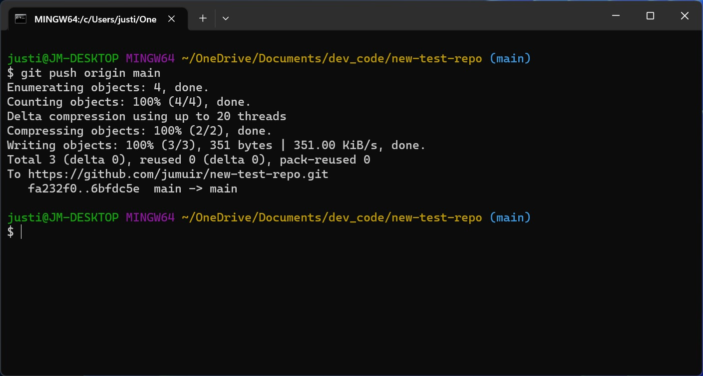

Git Guide
Git er et distribuert versjonskontrollsystem som hjelper utviklere med å spore endringer i kodebasen sin,
samarbeide med andre og administrere forskjellige versjoner av prosjektene sine.
Det ble opprettet av Linus Torvalds i 2005 for å støtte utviklingen av Linux-kjernen.
Git har mange forskjellige kommandoer. som f.eks.
git init - for å initialisere et nytt git-repositorium
git clone - for å klone et eksisterende repositorium
git add - for å legge til filer i staging-området
git commit - for å lagre endringer i repositoriet
git push - for å laste opp endringer til en ekstern server
git pull - for å hente og slå sammen endringer fra en ekstern server
git status - for å sjekke statusen til repositoriet
git log - for å se historikken til endringer i repositoriet
git branch - for å administrere grener i repositoriet
git merge - for å slå sammen grener
git checkout - for å bytte mellom grener eller gjenopprette filer
git remote - for å administrere eksterne repositorier
git fetch - for å hente endringer fra en ekstern server uten å slå dem sammen
git reset - for å tilbakestille endringer i repositoriet
git diff - for å se forskjeller mellom filer eller commits
git stash - for midlertidig å lagre endringer uten å committe dem
git tag - for å merke spesifikke commits med en etikett
Det finst også mange andre kommandoar, men dei vi brukar mest er:
git init
git add
git commit
git push
git pull
git branch
git merge
git switch
Her er eit bilete av nokon som pusher endringar til eit repositorium:

Dette er dei viktigaste kommandoane for å bruke git effektivt.
Med desse kommandoane kan du spore endringar, samarbeide med andre
og administrere kodebasen din på ein effektiv måte. Etter at du har
redigert koden er det viktig og adde og committe endringene dine,
slik at dei blir lagra i repositoriet.
Hvorfor terminalen sier "Clean up tree" når jeg gjør git pull
Dette betyr som regel at Git oppdager lokale endringer eller en ufullstendig operasjon som må ryddes før en oppdatering. Vanlige årsaker:
- Lokale unstaged/endringer som blokkerer oppdatering
- Uavsluttet merge eller rebase
- Låste filer eller filnavn/case-problemer på Windows
- Et hook eller verktøy (IDE) som kjører ekstra opprydding
git status
# midlertidig lagre lokale endringer:
git stash push -m "wip"
git pull
git stash pop
# hvis du har konflikter:
git status
# løs konflikter i filene, så:
git add
git commit
# slett uønskede untracked filer (FORSIKTIG):
git clean -fd Hvis meldingen fortsatt kommer, sjekk output fra git pull for mer kontekst og se etter hooks/loggfiler i .git/hooks eller IDE-logg.
>>>>>>> 8c466aa22f91b129acc99b56a2ba99f6698bc796Kilder:
W3 SchoolsGithub
Jørn